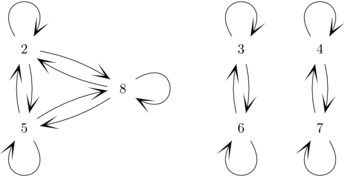

|
Building Blocks
|
Mathematical relations are an extremely general framework for specifying relationships between pairs of objects. This chapter surveys the types of relations that can be constructed on a single set $A$ and the properties pused to characterize different types of relations.
A relation $R$ on a set $A$ is a subset of $A \times A$, i.e. $R$ is a set of ordered pairs of elements from $A$. For simplicity, we will assume that the base set $A$ is always non-empty. If $R$ contains the pair $(x,y)$, we say that $x$ is related to $y$, or $xRy$ in shorthand. We'll write $x\not Ry$ to mean that $x$ is not related to $y$.
For example, suppose we let $A =\{2, 3, 4, 5, 6, 7, 8\}$. We can define a relation $W$ on $A$ by $xWy$ if and only if $x \le y \le x+2$. Then $W$ contains pairs like $(3,4)$ and $(4,6)$, but not the pairs $(6,4)$ and $(3,6)$. Under this relation, each element of $A$ is related to itself. So $W$ also contains pairs like $(5,5)$.
We can draw pictures of relations using directed graphs. We draw
a graph node for each element of $A$ and we draw
an arrow joining each pair of elements that are related.
So $W$ looks like:
In fact, there's very little formal difference between a relation on a set $A$ and a directed graph, because graph edges can be represented as ordered pairs of endpoints. They are two ways of describing the same situation.
We can define another relation $S$ on $A$ by saying that $xSy$ is
in $S$ if $x \equiv y \pmod{3}$. Then $S$ would look like:

Or, suppose that
$B = \{2,3,4,5,6,12,25\}$. Let's set up a relation $T$ on $B$
such that $xTy$ if $x | y$ and $x \not = y$. Then
our picture would look like
Mathematical relations can also be used to represent real-world
relationships, in which case they often have a less regular
structure. For example, suppose that we have a set of students
and student $x$ is related to student $y$ if $x$ nominated $y$
for ACM president. The graph of this relation (call it $Q$)
might look like:
Relations can also be defined on infinite sets or multi-dimensional objects. For example, we can define a relation $Z$ on the real plane $\mathbb{R}^2$ in which $(x,y)$ is related to $(p,q)$ if and only if $x^2+y^2 = p^2 + q^2$. In other words, two points are related if they are the same distance from the origin.
For complex relations, the full directed graph picture can get a bit messy. So there are simplified types of diagrams for certain specific special types of relations, e.g. the so-called Hasse diagram for partial orders.
Relations are classified by several key properties. The first is whether an element of the set is related to itself or not. There are three cases:
In our pictures above, elements related to themselves have self-loops. So it's easy to see that $W$ and $S$ are reflexive, $T$ is irreflexive, and $Q$ is neither. The familiar relations $\le$ and $=$ on the real numbers are reflexive, but $<$ is irreflexive. Suppose we define a relation $M$ on the integers by $xMy$ if and only if $x + y = 0$. Then $2$ isn't related to itself, but $0$ is. So $M$ is neither reflexive nor irreflexive.
The formal definition states that if $R$ is a relation on a set $A$ then
Another important property of a relation is whether the order matters within each pair. That is, if $xRy$ is in $R$, is it always the case that $yRx$? If this is true, then the relation is called symmetric .
In a graph picture of a symmetric relation, a pair of elements is either joined by a pair of arrows going in opposite directions, or no arrows. In our examples with pictures above, only $S$ is symmetric.
Relations that resemble equality are normally symmetric. For example, the relation $X$ on the integers defined by $xXy$ iff $|x| = |y|$ is symmetric. So is the relation $N$ on the real plane defined by $(x,y)N(p,q))$ iff $(x-p)^2 + (y-q)^2 \le 25$ (i.e. the two points are no more than 5 units apart).
Relations that put elements into an order, like $\le$ or divides, have a different property called antisymmetry . A relation is antisymmetric if two distinct elements (i.e. not two copies of the same element) are never related in both directions. In a graph picture of an antisymmetric relation, a pair of points may be joined by a single arrow, or not joined at all. They are never joined by arrows in both directions. In our pictures above, $W$ and $T$ are antisymmetric.
As with reflexivity, there are mixed relations that have neither property. So the relation $Q$ above is neither symmetric nor antisymmetric.
If $R$ is a relation on a set $A$, here's the formal definition of what it means for $R$ to be symmetric (which doesn't contain anything particularly difficult):
There's two ways to define antisymmetric. They are logically equivalent and you can pick whichever is more convenient for your purposes:
To interpret the second definition, remember that when mathematicians pick two values $x$ and $y$, they leave open the possibility that the two values are actually the same. In normal conversational English, if we mention two objects with different names, we normally mean to imply that they are different objects. This isn't the case in mathematics. I find that the first definition of antisymmetry is better for understanding the idea, but the second is more useful for writing proofs.
The final important property of relations is transitivity. A relation $R$ on a set $A$ is transitive if
If we look at graph pictures, transitivity means that whenever there is an indirect path from $x$ to $y$ then there must also be a direct arrow from $x$ to $y$. This is true for $S$ and $B$ above, but not for $W$ or $Q$.
We can also understand this by spelling out what it means for a relation $R$ on a set $A$ not to be transitive:
So, to show that a relation is not transitive, we need to find one
counter-example, i.e.
specific elements $a$, $b$, and $c$ such
that $aRb$ and $bRc$ but not $aRc$.
In the graph of a non-transitive relation, you can find
a subsection that looks like:
It could be that $a$ and $c$ are actually the same element, in which case
the offending subgraph might look like:
The problem here is that if $aRb$ and $bRa$, then transitivity would imply that $aRa$ and $bRb$.
One subtle
point about transitive is that it's an if/then statement.
So it's ok if some sets of elements just aren't connected at all.
For example, this subgraph is consistent with the relation being
transitive.
A disgustingly counter-intuitive special case is the relation in which absolutely no elements are related, i.e. no arrows at all in the graph picture. This relation is transitive. it's never possible to satisfy the hypothesis of the definition of transitive. It's also symmetric, for the same reason. And, oddly enough, antisymmetric. All of these properties hold via vacuous truth.
Vacuous truth doesn't apply to reflexive and irreflexive, because they are unconditional requirements, not if/then statements. So this empty relation is irreflexive and not reflexive.
Now that we have these basic properties defined, we can define some important types of relations. Three of these are ordering relations:
Linear orders are all very similar to the normal $\le$ ordering on the real numbers or integers. Partial orders differ from linear orders, in that there are some pairs of elements which aren't ordered with respect to each other. For example, the divides relation on the integers is a partial order but not a linear order, because it doesn't relate some pairs of integers in either direction. For example, 5 doesn't divide 7, but neither does 7 divide 5. A strict partial order is just like a partial order, except that objects are not related to themselves. For example, the relation $T$ at the start of this chapter is a strict partial order.
The fourth type of relation is an equivalence relation:
Definition: An equivalence relation is a relation that is reflexive, symmetric, and transitive.
These three properties create a well-behaved notation of equivalence or congruence for a set of objects, like congruence mod $k$ on the set of integers. In particular, if $R$ is an equivalence relation on a set $A$ and $x$ is an element of $A$, we can define the equivalence class of x to be the set of all elements related to $x$. That is $$[x]_R = \{y \in A \mid xRy\}$$
When the relation is clear from the context (as when we discussed congruence mod $k$), we frequently omit the subscript on the square brackets.
For example, we saw the relation $Z$ on the real plane $\mathbb{R}^2$, where $(x,y)Z(p,q)$ if and only if $x^2+y^2 = p^2 + q^2$. Then $[(0,1)]_Z$ contains all the points related to $(0,1)$, i.e. the unit circle.
Let's see how to prove that a new relation is an equivalence relation. These proofs are usually very mechanical. For example, let $F$ be the set of all fractions, i.e. $$F = \{\frac{p}{q} \mid p,q \in \mathbb{Z} \text{ and } q \not = 0\}$$
Fractions aren't the same thing as rational numbers, because each rational number is represented by many fractions. We consider two fractions to be equivalent, i.e. represent the same rational number, if $xq = yp$. So, we have an equivalence relation $\sim$ defined by: $\frac{x}{y}\sim \frac{p}{q}$ if and only if $xq = yp$.
Let's show that $\sim$ is an equivalence relation.
Proof: Reflexive: For any $x$ and $y$, $xy = xy$. So the definition of $\sim$ implies that $\frac{x}{y}\sim \frac{x}{y}$.Symmetric: if $\frac{x}{y}\sim \frac{p}{q}$ then $xq = yp$, so $yp = xq$, so $py = qx$, which implies that $\frac{p}{q}\sim \frac{x}{y}$.
Transitive: Suppose that $\frac{x}{y}\sim \frac{p}{q}$ and $\frac{p}{q}\sim \frac{s}{t}$. By the definition of $\sim$, $xq = yp$ and $pt = qs$. So $xqt = ypt$ and $pty = qsy$. Since $ypt = pty$, this means that $xqt = qsy$. Cancelling out the $q$'s, we get $xt = sy$. By the definition of $\sim$, this means that $\frac{x}{y}\sim \frac{s}{t}$.
Since $\sim$ is reflexive, symmetric, and transitive, it is an equivalence relation.
Notice that the proof has three sub-parts, each showing one of the key properties. Each part involves using the definition of the relation, plus a small amount of basic math. The reflexive case is very short. The symmetric case is often short as well. Most of the work is in the transitive case.
Here's another example of a relation, this time an order (not an equivalence) relation. Consider the set of intervals on the real line $J = \{(a,b) \mid a,b\in \mathbb{R} \text{ and } a < b\}$. Define the containment relation $C$ as follows:
$(a,b)\ C\ (c,d)$ if and only if $a \le c$ and $d \le b$
To show that $C$ is a partial order, we'd need to show that it's reflexive, antisymmetric, and transitive. We've seen how to prove two of these properties. Let's see how to do a proof of antisymmetry.
For proving antisymmetry, it's typically easiest to use this form of the definition of antisymmetry: if $xRy$ and $yRx$, then $x=y$. Notice that $C$ is a relation on intervals, i.e. pairs of numbers, not single numbers. Substituting the definition of $C$ into the definition of antisymmetry, we need to show that
For any intervals $(a,b)$ and $(c,d)$, if $(a,b)\ C\ (c,d)$ and $(c,d)\ C\ (a,b)$, then $(a,b) = (c,d)$.
So, suppose that we have two intervals $(a,b)$ and $(c,d)$ such that $(a,b)\ C\ (c,d)$ and $(c,d)\ C\ (a,b)$. By the definition of $C$, $(a,b)\ C\ (c,d)$ implies that $a \le c$ and $d \le b$. Similarly, $(c,d)\ C\ (a,b)$ implies that $c \le a$ and $b \le d$.
Since $a \le c$ and $c \le a$, $a = c$. Since $d \le b$ and $b \le d$, $b = d$. So $(a,b) = (c,d)$.